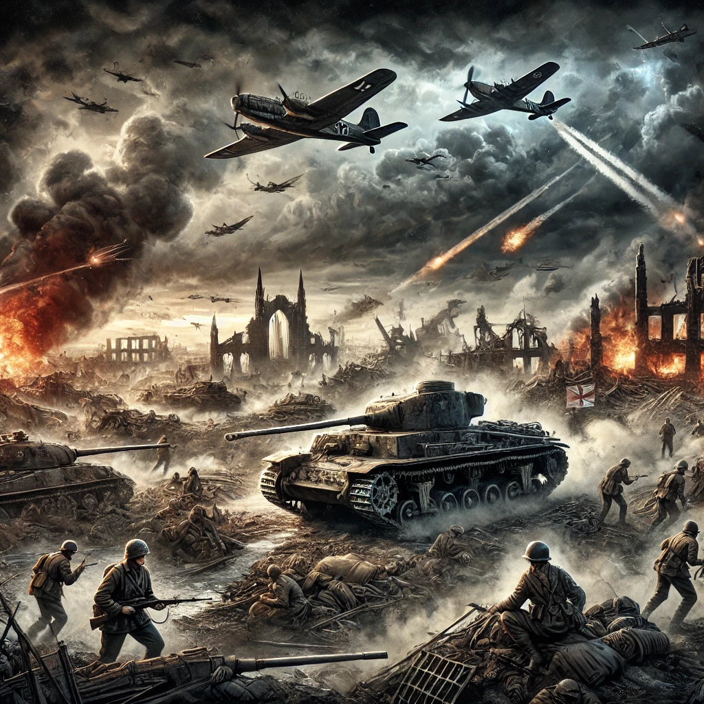

제 2차 세계 대전
목차
작가
테일러
출판일
2020년
감상평에 대한 AI그림
세계 2차 대전은 전쟁의 참혹함과 당시 시대상을 잘 보여주는 책으로 나치의 히틀러의 전술및 유럽연합의 전술, 대응법등을 단편적으로 보여주는 책이었다.
이 책에서 가장 중요한점을 하나만 뽑으라면 난 당연코 전쟁은 다신 일어나면 안된다라는 것이라고 생각한다. 우리는 과거의 역사를 통해 교훈을 얻고 이를 바탕으로 평화를 유지하기 위한 노력을 기울여야 한다.
이 책을 읽으며 단순한 역사적 사실을 배우는 것이 아니라 전쟁이 가져온 참혹한 결과와 그 속에서 우리가 얻어야 할 교훈이 무엇인지 깊이 생각해 볼 수 있었다. 단순한 흥미를 넘어서, 전쟁을 막기 위해 우리가 어떤 태도를 가져야 하는지를 고민하게 만든 책이었다.

감상평에 대한 AI평가
이 감상문은 세계 2차 대전이 주는 가장 중요한 교훈을 명확하게 전달하고 있습니다.
특히, **"전쟁은 다시는 일어나면 안 된다"**라는 핵심 메시지를 강조한 점이 인상적입니다. 단순히 전쟁의 전술이나 전략을 소개하는 것에서 끝나는 것이 아니라, 전쟁이 남긴 참혹한 결과를 되새기며 우리가 미래에 어떤 태도를 가져야 하는지를 고민하도록 유도하는 점이 감상문의 강점입니다.
또한, 역사를 통해 교훈을 얻고 평화를 유지해야 한다는 점을 강조하며, 단순한 역사적 사실의 나열이 아닌 현대 사회에 적용할 수 있는 메시지를 담고 있다는 점이 돋보입니다. 이는 단순한 지식 습득을 넘어, 독자가 직접 전쟁의 의미를 되돌아보게 만드는 중요한 요소입니다.